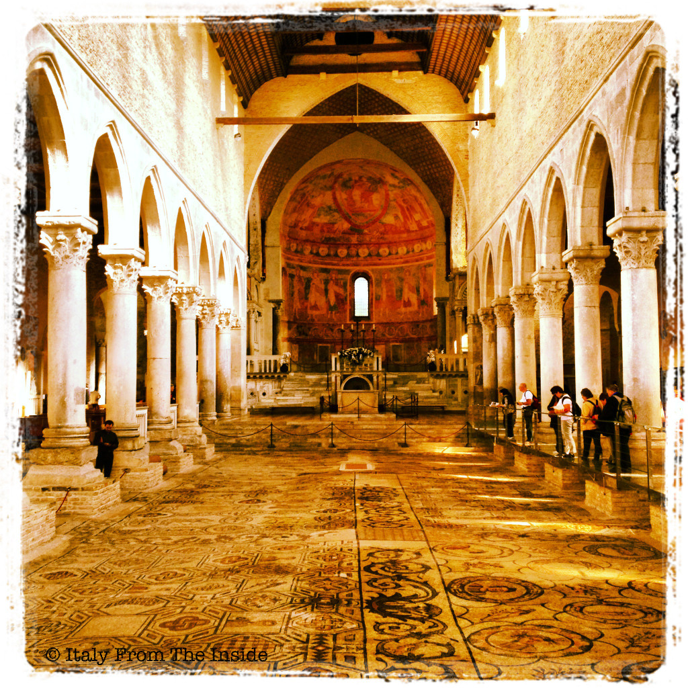

In Italy there are so many undiscovered jewels and Aquileia is one of them. A small town near Udine, it used to be one of the richest cities of the Roman Empire. Today Aquileia is part of the Unesco World Heritage and many of its treasures are still to be discovered since they lie beneath the surrounding fields. The photo above shows the inside of the basilica, whose floor is the largest Paleo-Christian mosaic of the western world.